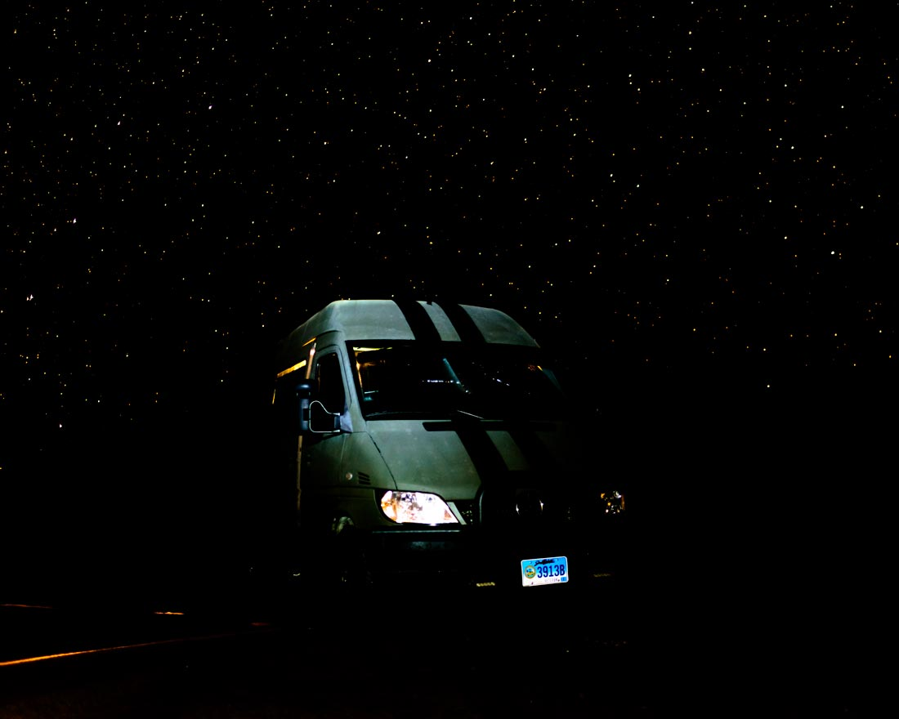
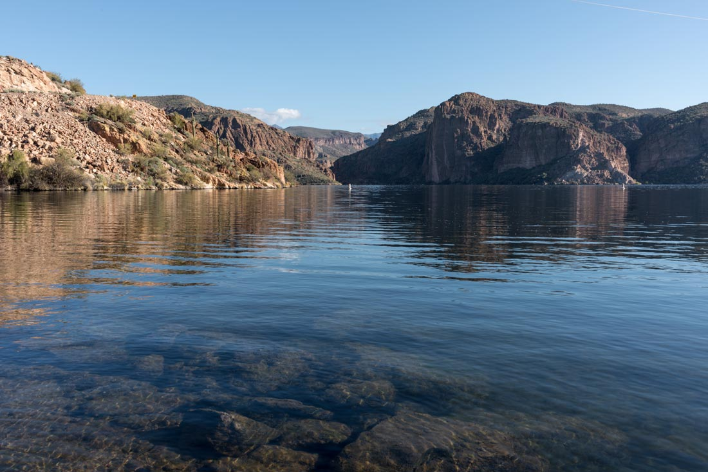
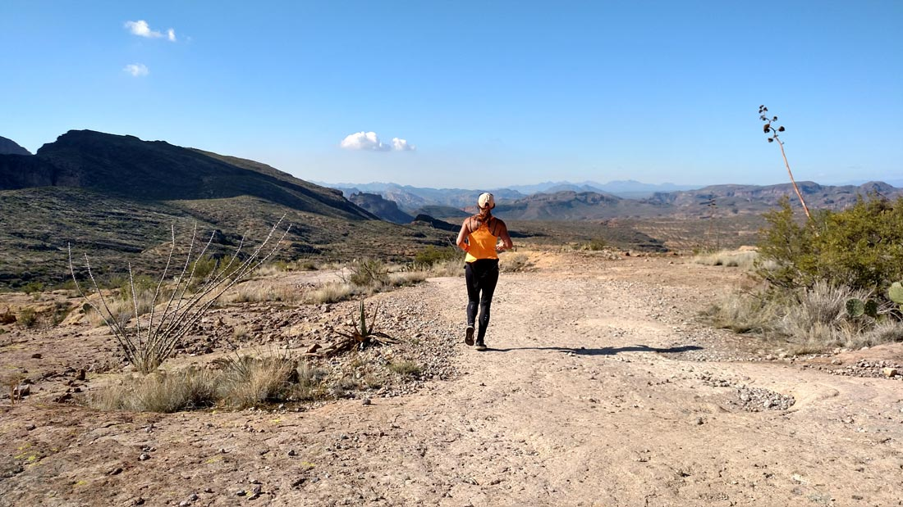
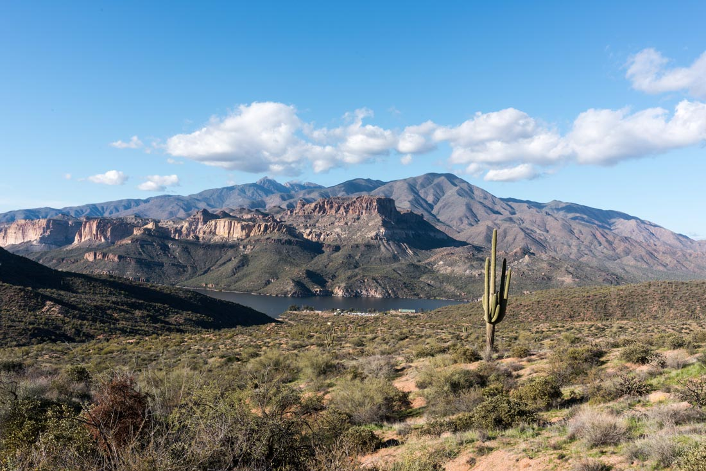
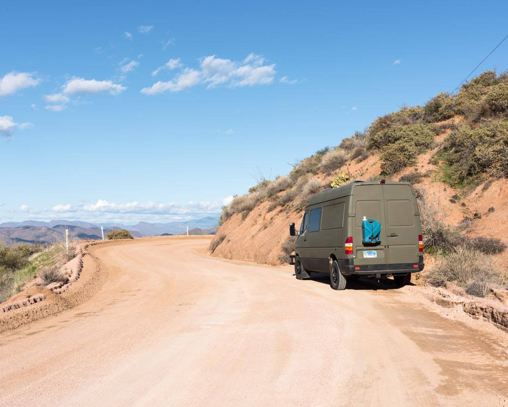
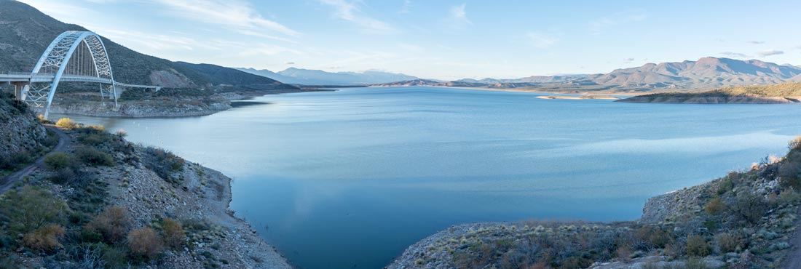
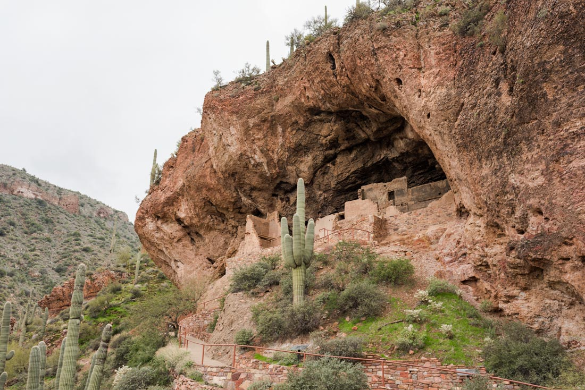
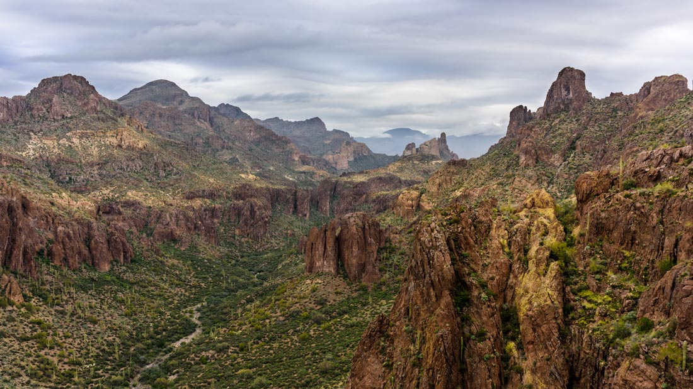
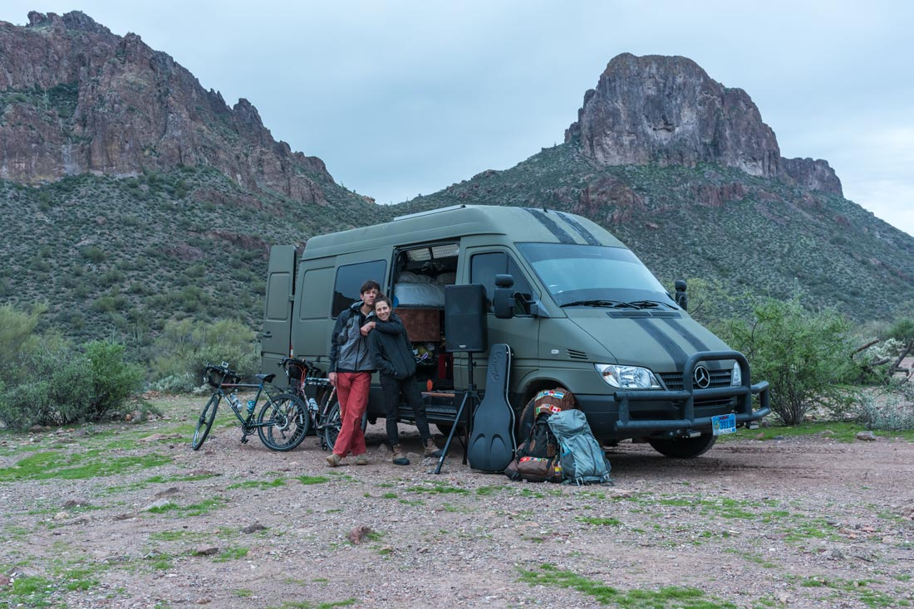
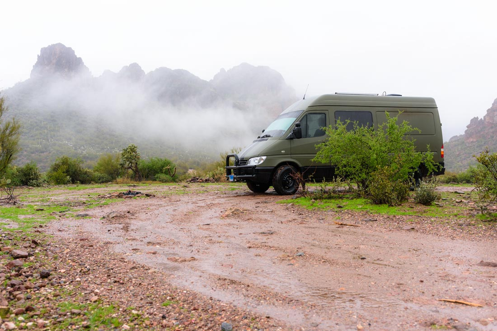

Blog Posts all posts
The Superstition Mountains 2017-1-19
We decided to escape the city for a while so we headed East out of Phoenix towards Tonto National Forest. We left late so decided to just get to the entrance of the park and spend the first night in the desert. We weren't too far from the city and still had a wonderful view of the stars.
The Sprinter with stars in background.
With very little research done we were surprised that the road wasn't paved, but not at all disappointed. Tortilla Flats was our first stop and turned out to be essentially a suvenior shop advertising "Population 4" on everything. We continued on and decided to go for a morning run out into the Superstition Wilderness.
Canyon Lake
Michelle trail running in the Superstition Wilderness.
Apache Lake with the Mazatzal Mountains in the background.
The road wound us down into a canyon wrapping downwards and then back upwards along the opposite side. The canyons were a lot larger and more majestic than we expected. The Mazatzal Mountains appeared along the way and I took a photo of what turned out to be Brown's Peak. I am hoping to return and hike to the top but they received a large amount of snow so it may be... harder, heh.
Beautiful views along the road.
We spent the next night along Theodore Roosevelt Lake. If anyone is interested if you want to know what a good president is like, read about that legend. He created our national Forest Service and first 5 new national parks, charged into battle with the rough riders during the Spanish-American war, and eliminated monopolies and made dealing between consumers and corporations fairer. The man!
Theodore Roosevelt Lake
Next, we checked out some cave dwellings that the national forest was named after and contemplated then versus now. I wondered if it would have been easier to park the van closer to the river in the old-school, lawless society. But the forest ranger brought my attention to how they made sandals out of cactus twine and how the cacti, that are everywhere, must have been annoying in sandals and shorts. True that. Now seems a lot better than then now, even without the gun/bow fights.
Tonto National Monument
Next was the Superstition Mountains! Michelle was a bit concerned with the route but I was overcome by a strong desire for mountains and wildness and pressed on down the 4x4 pot-hole ridden road. Her concerns reached a higher pitch as I drove through a small stream but I steeled my gaze forward. It wasn't until we started to rollercoaster through some up-down, looser gravel stuff that her threats of killing me broke my waining confidence. "Alright! This is far enough!" and I grabbed my camera gear and started wandering towards the nearest mountains.
The mountains cleansed my fiery soul, reminding me of my insignificance and mortality. Their stoic majesty and infinite patience are overwhelming. I did my best to capture their beauty and hope that all who consider my photos look closely and are reminded to appreciate their own natural worlds. Nature rocks.
The Superstition Mountains
Base Camp Van
Michelle had some fun playing guitar and practicing for her show scheduled for the next day. We knew rain was forecasted for the next few days, she made sure I remembered and insisted we leave when I returned. I stubbornly insisted we had to stay out in the wilderness and that she should be optimistic. It rained the entire night...
Rainy Morning
I was pretty nervous about getting out the next morning as it would make Michelle very right, and very mad... So we started off and I said well there are only two points we may be in trouble at: the loose stuff on the uphills and the stream.
As we gunned it up the hill easily I felt pretty good about our chances. And then we saw the stream, from a long ways off... It was wide, very wide, and intimidatingly fast. I put some shorts on and waded out into the water. The current could best be described as "sweeping". It was about knee-deep, along the highest narrow ridge, and was definitely knee deep a little to the left.
So I started trying to dam the river. The gigantic rocks would bounce along downstream when thrown in but what else was I supposed to do? Michelle started hollering and waving when I was just about done ;)
Some self-proclaimed hicks were standing on the waters edge when I got back to the van. They told me to pop the hood and then shouted about the air intake and pointed from across the water. One was a Mercedes mechanic and told me about how much money they made on just this very situation. Next, I wandered about the water again and they made notes about the low spots and told me this and that about bad things before telling me to just get 'er done, they had a big ol' rope to pull me out, and lastly that if they gave me the "chop neck" signal to kill the vehicle so I wouldn't suck water up the thing and destroy my turbo.
Well, we shouldn't have doubted the ol' girl, she made it just fine. On closer inspection the mechanic slapped his head and pointed out, "It's got a snorkel!" He drew a line near the hood and said I could go this deep and that I was only at my fog lights. They drank some more beers as we chatted like we had all just won something important. Turns out they were on there way out to go bow hunting and were mostly vets. "As long as another vet is on this planet you got someone to help ya!", they proclaimed. Hells yeah. God bless those gentlemen. I hope they nailed something real big!
I was able to get a picture of sufficient quality to add to my prints list. I've been working on creating an album of US Landscapes as we tour through the states. This is only the second photo I am considering worthy of the album. You can take a look at all the photos I have available for print here. I've just recently done the groundwork to offer prints so if anyone is interested but is looking for different sizes or material send me an email and I'll see if I can figure out a solution. Ta-ta for now.